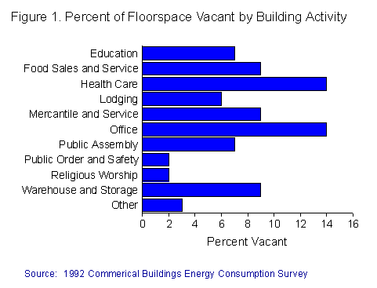
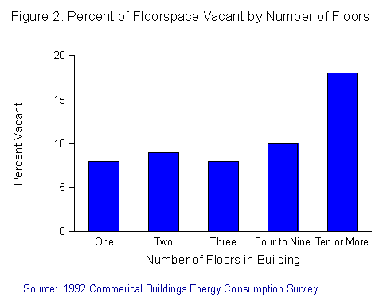

Effective Occupied and Vacant Square Footage
in Commercial Buildings in 1992
-- A Useful Benchmark of Commercial Floorspace Vacancy Rates --
Introduction
One of the major approaches to analyzing energy use in end-use sectors is to relate energy use to measures of the extent of utilization of the sector, either in absolute terms or in
terms relative to some maximum utilization level. For example, vehicle miles traveled is a
measure of vehicle utilization in the transportation sector. The percent of maximum
production capability at which an industry or an individual plant is operating is a measure
of industrial capacity utilization in the industrial sector.
For the commercial buildings sector, two concepts that measure how intensely a building is utilized seem to predominate: the number of hours the building is in operation and the amount of floorspace in the building that is occupied (or conversely, the amount that is
vacant).
The Commercial Buildings Energy Consumption Survey (CBECS), a national sample survey of commercial buildings, has collected information since 1979 on how energy is used in commercial buildings. Because the amount of energy used in a building is closely related to building characteristics such as the building's size, operating hours and how the building is used, the CBECS also collects information about these characteristics. For more information see the building characteristics.
Historically, CBECS has measured operating hours in some detail, but has provided less detail about the amount of occupied and vacant floorspace in commercial buildings. Two primary measures have been used to estimate occupied and
vacant floorspace in the CBECS. However, with the exception of the 1992 CBECS, these
two measures are based on building-level classification of vacancy, and do not provide
sufficient detail needed to calculate the more precise measures of effective occupied space
and effective vacant space. These measures account for the portion of floorspace in an
occupied building that is vacant and the portion of floorspace in a vacant building that is
occupied.
To address this issue, more detailed information on occupied and vacant floorspace was collected in the 1992 CBECS. Using this more detailed
information, approximately, 9 percent of all floorspace in commercial buildings was
determined to be vacant in 1992 (Table 1a).
Although this number does not vary much by building characteristics, some building types did show notably high or low vacancy rates. Office buildings and health care buildings had the greatest amount of vacant floorspace, with approximately 14 percent of their
respective floorspace vacant. Buildings where the primary activity was religious worship
or public order and safety had the least amount of vacant floorspace. Only 2 percent of
the floorspace in these types of buildings was vacant (Figure 1). In addition, buildings
with ten or more floors had a relatively large percent of vacant floorspace during 1992 (18
percent). (Figure 2).
Other building categories with a relatively large percentage of vacant floorspace were buildings that were not heated (28 percent of floorspace), cooled (18 percent of
floorspace) or lit (70 percent of floorspace). It is reasonable to assume that building
managers do not want to pay for utilities for the portions of the building that are vacant.


Amount of Electricity Consumed in Effective Occupied and Vacant Commercial Building Floorspace
The average measure of effective occupied and vacant floorspace is useful not only to characterize building occupancy, but also to measure the intensity of energy use, since
CBECS collects energy use for a calendar year. Ideally, the way to measure energy
intensity would be to separate building energy use into two parts, (1) the energy used in
occupied floorspace, and (2) the energy used in vacant floorspace, and calculate intensities
specific to each. However, CBECS collects energy consumption only for the building as a
whole, and there is no known way to separate it by occupancy/vacancy rates. Therefore,
the only way, currently, to determine consumption in vacant floorspace is to analyze
consumption in buildings that were completely vacant during 1992. This analysis is
possible for electricity because it is consumed in virtually all buildings, even those that are
totally vacant. (A description of the methodology used to calculate electricity consumption in vacant buildings.
In 1992, approximately 8 thousand Btu of electricity was consumed per vacant square foot in buildings that were totally vacant but still had some electricity supplied to them (Table 2a). These intensities varied by building type: vacant office buildings were the most energy intensive, using about 15 thousand Btu of electricity per vacant square foot; vacant mercantile and service buildings were the least intensive, using 3 thousand Btu of electricity per vacant square foot.
If these intensities are applied to all vacant commercial floorspace in both totally vacantand partially occupied CBECS buildings, electricity consumption can be estimated for all
floorspace identified as vacant by the 1992 CBECS. (This process assures that electricity
intensity for vacant floorspace in otherwise occupied buildings is the same as its intensity
in buildings that were completely vacant during the year, an uncertain equivalence, but the
best assumption that can be made.) Then, subtracting this value from total electricity
consumption for the sector yields an estimate of electricity consumption specific to
occupied floorspace. Finally, dividing the consumption for occupied floorspace by the
effective occupied square footage gives an estimate of electricity intensity specific to
occupied floorspace.
Approximately 42 thousand Btu of electricity was consumed per occupied square foot in 1992. the amount of electricity used per occupied square foot ranged from 116 thousand
Btu in buildings classified as food sales and service to 8 thousand Btu in buildings where
the primary activity was religious worship.
Amount of Natural Gas, Fuel Oil and District Heat
Consumed in Occupied Buildings
For three other energy sources, natural gas, fuel oil and district heat, there were too few completely vacant buildings during 1992 that still had these energy sources supplied to
them, to be able to estimate the amount of energy consumed in vacant buildings as a
surrogate for the energy intensity specific to vacant floorspace. Therefore, the only
occupancy-related intensity measure that can be provided for these energy sources is total consumption per effective square foot This measure has a meaning of its own. It can be thought of as the amount of energy needed per unit of productive commercial space, with vacant square footage treated as nonproductive space.
In 1992, The amount of natural gas consumed
per effective occupied square foot was 52 thousand Btu in all commercial buildings
using natural gas(Table 3a). The
most natural gas intensive buildings were buildings where the primary activity
was health care with 133 thousand Btu consumed per effective occupied square
foot. Fuel oil and district heat consumption per effective occupied square foot
were 22 thousand Btu (Table 4a),
and 93 thousand Btu (Table 5a),
respectively. For consistency and comparison, comparable measures of total consumption
per effective occupied square foot are also provided for electricity
(Table 6a).
List of Tables
- Table 1a. Effective, Occupied, and Vacant Square Footage, 1992
- Table 1b. Relative Standard Errors for Relative Standard Errors for Effective Occupied, and Vacant Square Footage, 1992
- Table 2a. Electricity Consumption and Electricity Intensities,
per Square Foot, Specific to Occupied and Vacant Floorspace, 1992
- Table 2b. Relative Standard Errors for Electricity Consumption and Electricity Intensities,
per Square Foot, Specific to Occupied and Vacant Floorspace, 1992
- Table 3a. Total Natural Gas Consumption per Effective
Occupied Square Foot, 1992
- Table 3b. Relative Standard Errors for Total Natural Gas Consumption per Effective Occupied
Square Foot, 1992
- Table 4a. Total Fuel Oil Consumption per Effective Occupied
Square Foot, 1992
- Table 4b. Relative Standard Errors for Total Fuel Oil Consumption per Effective Occupied
Square Foot, 1992
- Table 5a. Total District Heat Consumption per Effective Occupied
Square Foot 1992
- Table 5b. Relative Standard Errors for Total District Heat Consumption per Effective Occupied Square Foot 1992
- Table 6a. Total Electricity Consumption per Effective Occupied
Square Foot, 1992
- Table 6b. Relative Standard Errors for Total Electricity Consumption per Effective Occupied
Square Foot, 1992
Links to the Text
Two Primary Measures
- In most CBECS, the issue of occupied or vacant floorspace is measured in two ways. The first way is through building activity classification questions. A building is classified
as vacant at the time of the survey if the largest single proportion of the building's square
footage is vacant. Otherwise, the building is classified as occupied, with the building
activity being the one that takes up the largest proportion of floorspace. In many cases a
building has either a single activity, or multiple activities that account for 100% of its
floorspace. However, it is often the case that a building classified as vacant has some
occupied square footage; and conversely, many buildings classified in an occupied activity
category have some vacant space.
There are two major problems with measuring vacancy rates based solely on building activity classification. First, the actual amount of vacant floorspace in buildings may
differ greatly from the amount of floorspace in buildings classified as vacant depending on the amount of vacant space in buildings classified as occupied, and the amount of occupied space in buildings classified as vacant.
For example, if a building population has an estimated 92 percent of floorspace in buildings classified as occupied, and 8 percent of floorspace classified as vacant, and if
the occupied buildings are on average, 95 percent occupied at the time of the survey, and
the vacant buildings are, on average, 90 percent vacant, then the actual proportion of
vacant space in the population at the time of the survey would be estimated as:
- V = (0.92)(0.05) + (0.08)(0.90) = 0.046 + 0.072 = 0.118, or 11.8 percent
a value almost 50 percent larger than the 8 percent that is classified as vacant using only
the building activity classification.
A second problem associated with using floorspace in vacant buildings as a surrogate for vacant floorspace is that the CBECS is ordinarily conducted in the fall of the year. If
vacancy rates in commercial buildings vary by season, then even the demonstrably flawed
measure of floorspace in vacant buildings may itself be biased relative to its true value
over time. Thus, the activity status measure is uncertain at best as a measure of the amount
of vacancy in buildings.
A second way occupied and vacant floorspace is measured is through a question that asks whether any space in a sample building was vacant for at least 3 consecutive months
during the past year. However, that question alone does not specify the proportion vacant
or the time period of the vacancy, and so is not adequate by itself as a measure of the
"amount" of vacancy found in a building.
More Details on Occupied and Vacant Floorspace
- In the 1992 CBECS an effort was made to more precisely characterize building occupancy in order to produce a directly-measured value of the amount of vacancy in
commercial buildings that would not be subject to seasonal bias. Survey respondents
were asked to estimate, month by month during 1992, the percentage of building
floorspace that was vacant.
- Calculation of Effective Occupied Square Footage
Effective occupied square footage was calculated in two different ways, depending on
whether or not some portion of the building was vacant for 3 consecutive months.
Buildings with Three Consecutive Months of Vacancy
If some parts of a building were vacant for 3 consecutive months, then the percentage of the floorspace that was vacant each month of the year was obtained. To calculate effective
occupied square footage, the percent vacant for each month was: (1) summed over all 12
months; (2) divided by 12; and (3) rounded to the nearest integer. This number was
subtracted from 100 to get the percent occupied. The total occupied square footage is the
percent occupied, multiplied by the total floorspace. Buildings reporting 3 consecutive
months of vacancy comprised about 18 percent of the population of commercial buildings.
This average, while it may not represent the amount of occupied or vacant floorspace of the building at any particular time of the year, is the best measure of the average over the
year.
Buildings Not Reporting Three Consecutive Months of Vacancy
Buildings not reporting 3 consecutive months of vacancy accounted for about 82 percent of all commercial buildings. The occupied square footage in these buildings is equal to the
total square footage of the building. Note: The total square footage is an overestimate of occupied square footage for these buildings, because a portion of the buildings will have
sections vacant for short periods of time, even though nothing was vacant for 3
consecutive months. However, it is likely that this overestimate is relatively small. For
example, if the buildings represented 76 percent of floorspace, and the average building
had 10 percent of its floorspace vacant for 1 month during the year, the ignored proportion
of vacant floorspace is (0.76)(0.1)(1/12)=0.6 percent of total floorspace.
Description
for Calculating Electricity Consumption in Vacant Buildings
- To calculate the electricity consumption per effective vacant floorspace buildings had to meet three criteria: (1) the principal building activity was classified as vacant; (2)
electricity was supplied to the building during 1992; and (3) the buildings were not
occupied at all during the year. There were 88 of these buildings in the sample. The
buildings were then divided into three groups based on their previous or intended
use--office buildings, mercantile and service, and all other. Given the data limitations,
computing consumption in vacant buildings that are intended to be offices, for example, is
the closest to computing electricity consumption in vacant floorspace in office buildings.
The electricity consumption in vacant square footage is the electricity intensities as calculated above, multiplied by the vacant floorspace in each building category. The
electricity consumption in occupied floorspace is the total consumption minus the
consumption in vacant floorspace. The intensities for vacant and occupied square footage
are equal to the respective consumption divided by the vacant and occupied square
footage totals.
Total Consumption per Effective Square Foot Measure
- Energy consumption per occupied floorspace
for natural gas, fuel oil and district heat is obtained by summing the energy
consumption in each building and dividing it by the total occupied square
footage. The resulting figure is the number of Btu (in thousands) consumed
per occupied square foot. However, for any building with any vacant floorspace,
this number will necessarily be higher than the energy intensity that is
calculated using total square footage, because the denominator is smaller.
Thus, building categories with the highest percentage of effective vacant
floorspace show the largest differences between the energy intensities calculated
using total square footage as a denominator and the energy intensities calculated
using the effective occupied square footage as a denominator.
When electricity consumption is calculated
in the same way as natural gas, fuel oil and district heat (i.e. relative
to occupied square footage rather than total square footage), there is
little difference in the consumption of electricity per effective occupied
square foot.
 Top of Page
Top of Page
 Archived
Reports Archived
Reports
File Last Modified: July 23, 1998
- Contact:
- Joelle.Michaels@eia.doe.gov
- Joelle Michaels
URL: http://www.eia.gov/consumption/commercial/data/archive/cbecs/sqftage/efecsqt1.html
If you are having any technical problems with this site, please contact
the EIA Webmaster at wmaster@eia.doe.gov
|